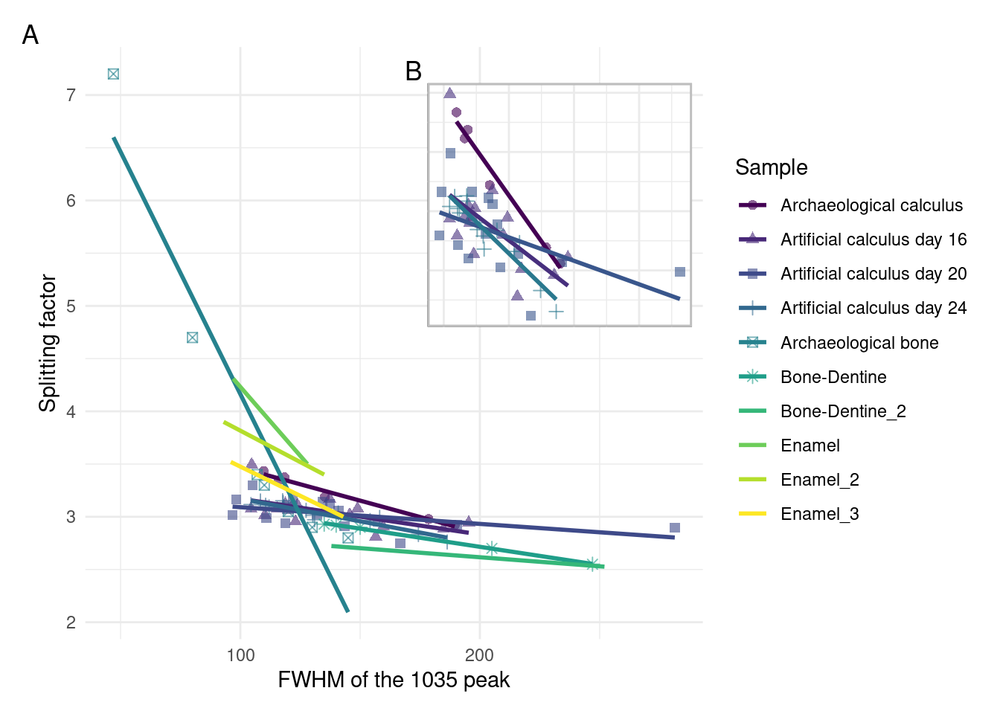

# A tibble: 36 × 2
`#SampleID` Env
<chr> <chr>
1 LIB030.A0117 library control
2 SYN001.A0101 saliva
3 SYN002.A0101 saliva
4 SYN003.A0101 saliva
5 SYN014.A0101 medium
6 SYN014.C0101 medium
7 SYN015.B0101 medium
8 SYN015.D0101 medium
9 SYN015.E0101 medium
10 SYN015.F0101 medium
# … with 26 more rowsTBD
Abstract
This is the abstract for the paper.
Introduction
Dental calculus is quickly becoming the go-to substance for exploring health and diet in past populations. Studies using archaeological dental calculus span a wide range of topics in different regions and time periods. These include characterisation of the oral microbiome and its evolution in past populations (Velsko et al. 2019; Adler et al. 2013; Warinner et al. 2014; Kazarina et al. 2021; Fellows Yates et al. 2021), extraction of microbotanical remains (Henry and Piperno 2008; Hardy et al. 2009; Mickleburgh and Pagán-Jiménez 2012; maHumanDiet2022?) and other residues to infer dietary patterns and nicotine-use (Buckley et al. 2014; Hendy et al. 2018; Eerkens et al. 2018).
Dental calculus is formed by the mineralisation of dental plaque. Dental plaque is an oral biofilm and is part of the normal state of the oral cavity; however, if left unchecked, plaque can lead to infections such as dental caries and periodontitis (Marsh 2006). Shortly after teeth are cleaned (whether mechanically or otherwise), a salivary pellicle adsorbs to the surface of the tooth, in most cases enamel, forming the acquired dental pellicle. The pellicle is comprised mainly of proteins and, in addition to protecting the tooth against mechanical and chemical decay, provides a viable surface for bacterial attachment (yaoIdentificationProtein2003?). Shortly after adsorbing to the enamel, early-coloniser species, such as those within genus Streptococcus and Actinomyces, adhere to the pellicle through reversible long-range physicochemical forces and irreversible short range cell-host interactions (Marsh 2006). Once the surface has been populated by the specialists in surface-attachment, other species of bacteria can attach to their surface through cell-cell interactions, allowing adhesion of species that are not otherwise capable of adhering to a surface. After accumulation and multiplication of bacteria, this, now, diverse community of is able to secrete polysaccharides, proteins, lipids, and nucleic acids, into their immediate environment to form a biofilm matrix (flemmingBiofilmsEmergent2016?). The matrix provides an adaptive advantage to the organisms within through resistance to antibiotics and mechanical removal, as well as transporting nutrients from outside the biofilm and facilitating distribution of resources between bacterial communities within the biofilm (petersonViscoelasticityBiofilms2015?; jainIsolationCharacterization2013?).
The composition of a biofilm matrix is largely water (around 90%), with the remaining content consisting of microbes, extracellular polysaccharides (EPS), DNA, RNA, and proteins (bergerOralBiofilms2018?). Biofilms can become susceptible to calcification under certain microenvironmental conditions. These include an increased concentration of salts and a decrease in statherin and proline-rich proteins in saliva, rises in local plaque pH, and increased hydrolysis of urea (whiteDentalCalculus1997?; wongCalciumPhosphate2002?). Under these conditions, the biofilm environment becomes favourable to increased precipitation and decreased dissolution of calcium phosphate salts within saliva and the plaque biofilm. The resulting supersaturation of calcium phosphate salts are the main drivers of biofilm mineralisation (jinSupragingivalCalculus2002?). Mineralisation generally starts from within the biofilm matrix as a result of nucleation, followed by mineralisation of the matrix and, subsequently, bacterial cells. The susceptibility of crystallisation in bacteria depends on the composition and concentration of membrane-associated components, such as proteolipids and phospholipids (jinSupragingivalCalculus2002?; whiteDentalCalculus1997?). Binding of calcium to bacterial membranes is facilitated by phospholipid molecules within the cell membrane, followed by association of phosphates with the bound calcium to form calcium phosphate complexes. These complexes are active in promoting the formation and deposition of hydroxyapatite within biofilms (jinSupragingivalCalculus2002?).
The primary minerals in dental calculus are hydroxyapatite (HAP), octacalcium phosphate (OCP), whitlockite (WHT), and brushite (BHT). During initial mineralisation the main mineral component is BHT, which shifts to HAP in more mature dental calculus (jinSupragingivalCalculus2002?; hayashizakiSiteSpecific2008?). The exact elemental composition of dental calculus varies by individual due to various factors, including diet (hayashizakiSiteSpecificMineral2008?; jiFluorideMagnesium2000?).
The role of bacteria in dental calculus formation is still not clear, and dental calculus formation has been induced in bacteria-free rodents (glasBiophysicalStudies1962?). However, given the abundance of bacteria present within human dental plaque, the structure of calculus will reflect the presence of bacteria with human dental calculus containing a heterogenous mineral composition across the biofilm due to the differing mineralisation properties in bacteria, and also directly influences the porosity of calculus (omelonReviewPhosphate2013?; rohanizadehUltrastructuralStudy2005?). The different susceptibility of certain bacteria to mineralise may explain differences in bacterial profiles in plaque and dental calculus (Velsko et al. 2019)
Attachment of dental calculus to enamel is further solidified by fusion of dental calculus with enamel rods (rohanizadehUltrastructuralStudy2005?; whiteDentalCalculus1997?).
The organic component of dental calculus consists of proteins and lipids, likely incorporated from bacteria, saliva, and food (whiteDentalCalculus1997?). Calculus forming above the gumline (supragingival) has a lower inorganic content than calculus forming below the gumline (subgingival) (jinSupragingivalCalculus2002?).
Oral biofilm models are commonly used in dental research to assess the efficacy of certain treatments on dental pathogens (filochePlaqueMicrocosm2007?; extercateAAA2010?). These are often short-term models grown over a few days, but there also exist longer term models used to develop dental calculus (middletonVitroCalculus1965?; Sissons et al. 1991; wongCalciumPhosphate2002?). There are multiple different types of models ranging from simplistic agar plate or multiwell-plate models (ceriCalgaryBiofilmDevice1999?; extercateAAA2010?), to more complex setups like the constant depth film fermenter (CDFF) (petersConstantDepth1988?) and the multi-station artificial mouth (MAM) (Sissons et al. 1991). The more complex models have the benefit of a continuous flow of saliva or saliva-like medium and control over the environment, while the multiwell-plate models offer the advantage of generating more samples over the same amount of time (mcbainBiofilmModels2009?). Simplistic models restricted to a select subset of oral bacteria are often more reproducible than models using whole saliva, while the latter are more representative of the in vivo oral microbiome complexity (roderStudyingBacterial2016?; mcbainBiofilmModels2009?).
We present an oral biofilm model that can serve as a viable proxy for dental calculus, and provide a method for fundamental research on dental calculus in the past. The need for such a model is warranted by the different questions that are asked by archaeologists compared to clinical dentistry. We are interested in learning more about how dietary residues and microremains become trapped in calculus, and how the methods we use may inadvertently bias our interpretations; questions that are best addressed in a lab using a model. We used FTIR to verify the mineral composition, and metagenomic classification to characterise the bacterial composition, and compared our results against modern and archaeological human dental calculus. We found that the mineral and organic components mimic that of the modern reference calculus used for comparison, while the bacterial classification revealed a similar but distinct community structure. In addition to the benefit of increased control over parameters involved in calculus formation and dietary incorporation, our method also provides unlimited material for experimentation, rather than using the limited archaeological material currently available.
Materials and Methods
Materials and methods
Biofilm growth
In this study we employ a multispecies oral biofilm model following a modified protocol from Sissons and colleagues (1991) and Shellis (1978). The setup comprises a polypropylene 24 deepwell PCR plate (KingFisher 97003510) with a lid containing 24 pegs (substrata), which is autoclaved at 120°C, 1 bar overpressure, for 20 mins.
The artificial saliva (AS) is a modified version of the basal medium mucin (BMM) described by Sissons and colleagues (1991). It is a complex medium containing 2.5 g/l partially purified mucin from porcine stomach (Type III, Sigma M1778), 5 g/l trypticase peptone (Roth 2363.1), 10 g/l proteose peptone (Oxoid LP0085), 5 g/l yeast extract (BD 211921), 2.5 g/l KCl, 0.35 g/l NaCl, 1.8 mmol/l CaCl2, 5.2 mmol/l Na2HPO4 (Sissons et al. 1991), 6.4 mmol/l NaHCO3 (Shellis 1978), 2.5 mg/l haemin. This is subsequently adjusted to pH 7 with NaOH pellets and stirring, autoclaved (15 min, 120°C, 1 bar overpressure), and supplemented with 5.8 (mu)mol/l menadione, 5 mmol/l urea, and 1 mmol/l arginine (Sissons et al. 1991).
Fresh whole saliva (WS) for inoculation was provided by a 31-year-old male donor with no history of caries, who abstained from oral hygiene for 24 hours, and no food was consumed two hours prior to donation. No antibiotics were taken up to six months prior to donation. The saliva was filtered through a sterilised (with bleach) nylon cloth to remove particulates. Substrata were inoculated with 1 ml/well of a two-fold dilution of WS in sterilised 20% glycerine for four hours at 36°C, to allow attachment of the salivary pellicle and plaque-forming bacteria. After initial inoculation, the substrata were transferred to a new plate containing 1 ml/well AS and incubated at 36°C, 30 rpm. The inoculation process was repeated on days 3 and 5. AS was partially refreshed once per day and fully refreshed every three days, throughout the experiment, by transferring the substrata to a new plate containing AS. To feed the bacteria, the substrata were transferred to a new plate, containing 5% (w/v) sucrose, for six minutes twice daily, except on inoculation days (days 0, 3, and 5), where the samples only received one sucrose treatment after inoculation.
Starch treatments were initiated on day 9 to avoid starch granule counts being affected by \(alpha\)-amylase hydrolysis from inoculation saliva. An \(\alpha\)-amylase assay confirmed the absence of any \(\alpha\)-amylase activity in the system (bartholdyInvestigatingBiases2021?). Starch treatments replaced sucrose treatments, occurring twice per day for six minutes. The starch treatments involved transferring the substrata to a new plate containing a 0.25% (w/v) starch from potato (Roth 9441.1) solution, a 0.25% (w/v) starch from wheat (Sigma S5127) solution, and a 0.5% (w/v) mixture of equal concentrations (w/v) wheat and potato. All starch solutions were created in a 5% (w/v) sucrose solution. Before transferring biofilm samples to the starch treatments, the starch plates were agitated to keep the starches in suspension in the solutions, and during treatments, the rpm was increased to 60.
After 15 days, mineralisation was encouraged with a calcium phosphate monofluorophosphate urea (CPMU) solution containing 20 mmol/l CaCl2, 12 mmol/l NaH2PO4, 5 mmol/l Na2PO3F, 500 mmol/l Urea (Pearce and Sissons 1987; Sissons et al. 1991), and (0.04 g/l MgCl). The substrata were submerged in 1 ml/well CPMU five times daily, every two hours, for six minutes. During the mineralisation period, starch treatments were reduced to once per day after the five CPMU treatments. This cycle was repeated for 10 days until the end of the experiment on day 24 (see @ref(fig:protocol-fig) for an overview of protocol). A more detailed protocol is available at.
All laboratory work was conducted in sterile conditions under a laminar flow hood to prevent starch and bacterial contamination. Control samples were included to detect starch contamination.
Metagenomics
A total of 36 samples were taken during the experiment from the donated saliva, artificial saliva, and from the biofilm end-product on day 24. DNA extraction was performed at the archaeogenetic facility at the Max Planck Institute for the Science of Human History (Jena, Germany). Extractions were performed in duplicates. A total of DNA extracts.
DNeasy PowerSoil Kit from QIAGEN. C2 inhibitor removal step skipped, going directly to C3 step.
were paired-end sequenced on a NextSeq (2 color chemistry) to 150bp
Preprocessing
Processing of the raw DNA reads was conducted using the nf-core/eager, v2.4.4 pipeline (Fellows Yates et al. 2020). Adapter removal and read merging was performed using AdapterRemoval, v2.3.2 (Schubert, Lindgreen, and Orlando 2016). Merged reads were mapped to the human reference genome (GRCh38 ) using BWA, v0.7.17-r1188 (Li and Durbin 2009) with default settings (-n 0.01; -l 32), and unmapped reads were extracted using Samtools, v1.12.
Metagenomic classification was conducted in kraken, v2.1.2 using the Standard database (Wood, Lu, and Langmead 2019).
Reference samples downloaded from HMP, ENA, and using SRA Toolkit and processed in the same way as the artificial samples. Only paired reads were processed, singletons were removed.
Authentication
Species with lower than 0.001% relative abundance were removed. SourceTracker (knightsSourceTracker2011?) was used to estimate source composition of the oral biofilm model samples using a Bayesian framework. Sampes were compared with oral and environmental controls to detect potential external contamination. The R package decontam v1.16.0 (Davis et al. 2018) was used to identify potential contaminants using DNA concentrations with a probability threshold of 0.95 and negative controls with a probability threshold of 0.05. Putative contaminants were filtered out of the OTU tables for all downstream analyses. Authentication methods are described in more detail in the Supplementary material.
Community composition
Relative abundances of communities were calculated at the species- and genus-level, as recommended for compositional data (gloorMicrobiomeDatasets2017?). Shannon index calculated on species OTU tables of all artificial and oral reference samples using the vegan 2.6.2 R package (Rvegan?). Sparse principal components analysis (sPCA) was performed on model biofilm samples to … and a separate sPCA analysis was performed on biofilm model end-products and oral reference samples using the mixOmics R package 6.20.0 (RmixOmics?).
Differential abundance
FTIR
To determine the mineral composition and level of crystallisation of the model dental calculus samples, we used Fourier Transform Infrared (FTIR) spectroscopy. We compared the spectra of model dental calculus with spectra archaeological dental calculus and used a built-in Omnic search library for mineral identification (weinerInfraredSpectroscopy2010?). The archaeological sample was dental calculus from an isolated tooth from Middenbeemster, a rural, 19th century Dutch site. Samples were analysed at the Laboratory for Sedimentary Archaeology, Haifa University. The analysis was conducted with a Thermo Nicolet is5 spectrometer in transmission, at 4 cm\(^{-1}\) resolution, with an average of 32 scans between wavenumbers 4000 and 400 cm\(^{-1}\).
Analysis was conducted on 28 biofilm samples from days 7, 12, 16, 20, and 24. Some samples from the same sampling day had to be combined to provide enough material for analysis. Samples analysed for FTIR originated from a different experiment than the metagenomic samples, following the same protocol (as described above). Samples were analysed following the method presented in (asscherAtomicDisorder2011?). A few \(\mu\)g of each sample were repeatedly ground together with KBr and pressed in a 7 mm die under two tons of pressure using a Specac mini-pellet press (Specac Ltd., GS01152). Repeated measurements of the splitting factor were taken after each grind, and a grind curve was produced following (asscherAtomicDisorder2011?). Samples were ground and analysed up to six times (sample suffix a-f) for the grinding curve. Grinding curves were prepared for samples from days 16, 20, and 24. No grind curves were produced for samples from days 7 and 12. These were largely composed of organics and proteins, and did not form enough carbonated hydroxtapatite for analysis. The splitting factor of carbonate hydroxyapatite was calculated using a macro script, following (weinerStatesPreservation1990?), by dividing the sum of the height of the absorptions at 603 cm\(^{-1}\) and 567 cm\(^{-1}\) in the height of the valley between them. Following (asscherAtomicDisorder2011?) we plotted the IRSF against the full width at half maximum (FWHM) of the main absorption at 1035, and compared our grinding curves to the ones produced by (asscherAtomicDisorder2011?).
Splitting factors of the doublet, and FWHM of the main PO4 peak at 1040 were calculated from the grinding measurements, and plotted against each other to create grinding curves to explore crystallinity (crystal size) and the order and disorder. Disorder is a steep slope and large FWHM.
Statistics
Statistical analysis was conducted in R Statistical Software R version 4.2.0 (2022-04-22) (Vigorous Calisthenics) (Rbase?). Data cleaning and wrangling performed with packages from tidyverse (tidyverse2019?). Plots were created using ggplot2 (Rggplot?).
Results
Metagenomic analysis
Sample authentication
The sources of taxa were estimated using SourceTracker2 (knightsSourceTracker2011?). The results suggest that the majority of taxa across samples have an oral microbial signature. SourceTracker2 results were compared to a database of oral taxa (fellowsyatesEvolutionChanging2021?) to prevent removal of samples where oral taxa were assigned to a non-oral source, as some similar taxa with a signature from multiple sources are often classified as “Unknown” (Velsko et al. 2019). A few samples suspected of containing a large proportion of contamination were removed (SYN015.F0101,SYN015.G0101,SYN015.H0101,SYN017.F0101,SYN017.G0101,SYN018.H0101,SYN013.I0101,SYN016.I0101). The removed samples were predominantly medium samples from later in the experiment, and a few calculus samples (see Supp mat).
Decrease in community diversity across experiment
Lower diversity in artificial samples than oral references
FTIR


Day 7 spectra have large O–H and amide A absorbance bands in stretching mode around 3400 cm\(^{-1}\), as well as three marked CH3 and CH\(_2\) stretching vibrations at 2960, 2920, and 2850 cm\(^{-1}\). There is a clear amide I peak at 1650 and a less pronounced amide II peak at 1545 cm\(^{-1}\). In the ‘fingerprint’ region, C–O\(_3^{2-}\) at 1450 and 1400 absorbance bands corresponding to the v3 asummetric stretching vibrations, P–O4 absorbance band corresponding to the v3 asymmetric stretching vibrations at 1080 cm\(^{-1}\), and minor phosphate absorption bands around 500 cm\(^{-1}\) in sample F7.1A6, but absent in sample F7.2D1. The absorption bands at 1080 cm\(^{-1}\), and 1040-1047 cm\(^{-1}\) and minor bending absorption bands of the phosphate doublet around 605 cm\(^{-1}\) and 560 cm\(^{-1}\) in sample F7.2D1, but absent in sample F7.1A6. The absorption bands at 1080 cm\(^{-1}\) could be a C–N stretching mode from aliphatic amines, but may also come from silicate contamination (typical quartz doublet at 797, 780). The relative absorbance of O–H and Amide I and II bands are higher than the phosphate bands, representing a relatively higher content of lipids and proteins than inorganic content. Large variation between spectra.
Day 12, amide I and II continue to be the dominant peaks, and a higher ratio of both amide and O–H to PO4 v3 absorbance bands. Three marked CH3 and CH\(_2\) stretching vibrations at 2960, 2920, and 2850 cm\(^{-1}\). Reduced variation between two of the three spectra.
Day 16, the ratio of O–H and amides to PO4 has shifted, with the main peak shifting to the PO4 v3 absorbance band at 1040 (except in sample F16.1A2). A well-defined PO4 doublet at 600 and 560 is present. Small CO\(_3^{2-}\) asymmetric stretching at 1450 cm\(^{-1}\) and 1415 cm\(^{-1}\), and stretching vibrations at 875-870 cm\(^{-1}\). Decreased variability between the spectra, with most spectra exhibiting a higher phosphate-to-protein/lipid ratio.
Day 24, large O–H and amide A absorbance bands in stretching mode around 3400 cm\(^{-1}\), as well as three minor CH3 and CH\(_2\) stretching vibrations at 2960, 2920, and 2850 cm\(^{-1}\). Main peak of spectra is PO4 v3 at 1040 cm\(^{-1}\), well-defined PO4 doublet at 600-550 cm\(^{-1}\). Amide I band, with small amide II and III bands. Carbonate peaks also present. Very little variation between all of the spectra.
The main difference in the samples across the experiment, with increasing age, is an increase in the main PO4 v3 peak at around 1040 cm\(^{-1}\), appearance of the phosphate doublet around 600 and 560 cm\(^{-1}\) between day 12 and 16, an increase in the carbonate peaks at 1458-1450 cm\(^{-1}\) and 1415-1420 cm\(^{-1}\), an increase in the ratio of the Amide I/II to peaks at around 1650 and 1540 cm\(^{-1}\), and a reduction of the C–H2 and C–H3 stretching vibrations at 2960, 2920, and 2850 cm\(^{-1}\).
High lipid and protein content consistent with the presence of extracellular polysaccharides and bacteria within a matrix. Microbial DNA and RNA may be visible from peaks around 1200–800 cm\(^{-1}\) on days 7 and 12, which are later obscured by the increasing phosphate peak at 1040 cm\(^{-1}\) (jainIsolationCharacterization2013?). The presence of water indicated by the O–H stretch is also consistent with a biofilm, which is around 90% water (bergerOralBiofilms2018?). As the samples mature, the ratio of proteins and lipids to phosphates shift from predominance of organic content to inorganic content in the form of carbonated hydroxyapatite.
Early spectra, days 7 and 12, are also similar to collagen spectra, with the OH absorbance band at around 3400 cm\(^{-1}\), amide I, II, and III peaks at 1659, 1552, and 1240 cm\(^{-1}\), respectively (rohanizadehUltrastructuralStudy2005?; martinezcortizasLinkingStructural2020?).
The archaeological and modern reference spectra are largely indistinguishable and consist of an O–H absorbance band (3400 cm\(^{-1}\)), CH3 bands (3000–2900 cm\(^{-1}\)), carbonate (1420, 1458-1450, 875-870 cm\(^{-1}\)), amide I band (1650 cm\(^{-1}\)), and phosphates (1040, 604, 566 cm\(^{-1}\)).
The biofilm samples from the end of the experiment are similar to both reference samples. The main difference is a lower organic component in reference samples seen as a reduced amide I peak at around 1637 compared to the carbonate peak at around 1420, and an absence of amide II and III. Also a reduction in CH3 bands at 3000-2900 cm\(^{-1}\).
Grinding curves

Samples were compared to the results of (asscherAtomicDisorder2011?) and (asscherVariationsAtomic2011?), and the slopes of the trend lines for our model calculus are similar to those of fresh bone and dentin. No appreciable differences between days 16, 20, and 24. The archaeological dental calculus does show a slightly increased slope compared to model calculus from the three sampling days used in the grind curve.
Discussion
Discussion
In this study we present a [long-term] oral biofilm model with mineralisation to produce model dental calculus. The aim of the model is to address a variety of research questions related to dental calculus, both in the present and in the past. We also assess the viability of our model as a proxy for dental calculus.
used metagenomic classification and FTIR to in bacterial and mineral content. The performance of our model as a proxy for dental calculus was evaluated using metagenomic screening for bacterial composition, and FTIR for mineral structure.
While our model is not an anaerobic system, the anaerobes seem to have outcompeted aerobes and facultative anaerobes over the course of the experiment. This may be a result of biofilm microenvironments, where species can produce favourable environments within biofilms.
Experimental samples are indicative of biofilm growth and maturation, including mineralisation, represented by a reduction in proteins and lipids (1460, 1420, 870) and the increasing intensity of peaks related to carbonated hydroxyapatite (1040, 600-550 cm\(^{-1}\)) over the course of the experiment.
The presence of collagen in dental calculus (and saliva) is still not clear. It may be a result of external contamination (mackiePreservationMetaproteome2017?) or end-products of collagen degradation (e.g. carboxyterminal telopeptide of type I collagen, ICTP) which may or may not be related to periodontitis (gursoySalivaryCollagen2013?). It is more likely that the proline-rich proteins (secondary amine) present in the samples are attributed to the biofilm matrix.
The artificial samples from day 24 resemble both the modern reference samples and the archaeological sample in mineral composition and crystallinity. The steeper slope of the archaeological sample may suggest larger crystals, which is to be expected, as the inorganic crystals expand into the space left by degrading organic matter over time (weinerBiologicalMaterials2010?). More samples are needed to see if this is consistent in archaeological samples. Overall, the spectra of the artificial calculus show an increase in the inorganic component and a decrease in the organic component over time. The grinding curves for days 16, 20, and 24 were very similar, suggesting that the CPMU solution (introduced on day 16) may not have much of an effect.
Research relating to \(alpha\)-amylase activity and its effect on the oral biome (whether dietary or otherwise) requires addition of amylase to the microcosm, as it is not present in the naturally in the system (as shown in ). The reason for the absence of \(alpha\)-amylase is not clear… There is of course no renewable source for \(alpha\)-amylase once the inoculations have been completed; furthermore, there does not seem to be any retention of \(alpha\)-amylase by amylase-binding streptococci (ABS). ABS are present in the system, but do not seem to be binding amylase. At this point we are unable to explain why.
Single donor may have affected diversity of model. Donated saliva had a lower mean alpha-diversity than other saliva samples.
This method can be used for a wide range of methods-testing (e.g. DNA, proteomics, etc.) as well as training for various sampling methods, and contamination protocol testing. The model also has dietary applications, which can be seen elsewhere .
References
Adler, C. J., K. Dobney, L. S. Weyrich, J. Kaidonis, A. W. Walker, W. Haak, C. J. Bradshaw, et al. 2013. “Sequencing Ancient Calcified Dental Plaque Shows Changes in Oral Microbiota with Dietary Shifts of the Neolithic and Industrial Revolutions.” Nature Genetics 45 (4): 450–55, 455e1. https://doi.org/10.1038/ng.2536.
Buckley, Stephen, Donatella Usai, Tina Jakob, Anita Radini, and Karen Hardy. 2014. “Dental Calculus Reveals Unique Insights into Food Items, Cooking and Plant Processing in Prehistoric Central Sudan.” PLOS ONE 9 (7): e100808. https://doi.org/10.1371/journal.pone.0100808.
Davis, Nicole M., Diana M. Proctor, Susan P. Holmes, David A. Relman, and Benjamin J. Callahan. 2018. “Simple Statistical Identification and Removal of Contaminant Sequences in Marker-Gene and Metagenomics Data.” Microbiome 6 (1): 226. https://doi.org/10.1186/s40168-018-0605-2.
Eerkens, Jelmer W., Shannon Tushingham, Korey J. Brownstein, Ramona Garibay, Katherine Perez, Engel Murga, Phil Kaijankoski, Jeffrey S. Rosenthal, and David R. Gang. 2018. “Dental Calculus as a Source of Ancient Alkaloids: Detection of Nicotine by LC-MS in Calculus Samples from the Americas.” Journal of Archaeological Science: Reports 18 (April): 509–15. https://doi.org/10.1016/j.jasrep.2018.02.004.
Fellows Yates, James A., Thiseas C. Lamnidis, Maxime Borry, Aida Andrades Valtueña, Zandra Fagernäs, Stephen Clayton, Maxime U. Garcia, Judith Neukamm, and Alexander Peltzer. 2020. “Reproducible, Portable, and Efficient Ancient Genome Reconstruction with Nf-Core/Eager.” bioRxiv, October, 2020.06.11.145615. https://doi.org/10.1101/2020.06.11.145615.
Fellows Yates, James A., Irina M. Velsko, Franziska Aron, Cosimo Posth, Courtney A. Hofman, Rita M. Austin, Cody E. Parker, et al. 2021. “The Evolution and Changing Ecology of the African Hominid Oral Microbiome.” Proceedings of the National Academy of Sciences 118 (20). https://doi.org/10.1073/pnas.2021655118.
Hardy, Karen, Tony Blakeney, Les Copeland, Jennifer Kirkham, Richard Wrangham, and Matthew Collins. 2009. “Starch Granules, Dental Calculus and New Perspectives on Ancient Diet.” Journal of Archaeological Science 36 (2): 248–55. https://doi.org/10.1016/j.jas.2008.09.015.
Hendy, Jessica, Christina Warinner, Abigail Bouwman, Matthew J. Collins, Sarah Fiddyment, Roman Fischer, Richard Hagan, et al. 2018. “Proteomic Evidence of Dietary Sources in Ancient Dental Calculus.” Proceedings. Biological Sciences 285 (1883): 20180977. https://doi.org/10.1098/rspb.2018.0977.
Henry, Amanda G., and Dolores R. Piperno. 2008. “Using Plant Microfossils from Dental Calculus to Recover Human Diet: A Case Study from Tell Al-Raqā’i, Syria.” Journal of Archaeological Science 35 (7): 1943–50. https://doi.org/10.1016/j.jas.2007.12.005.
Kazarina, Alisa, Elina Petersone-Gordina, Janis Kimsis, Jevgenija Kuzmicka, Pawel Zayakin, Žans Griškjans, Guntis Gerhards, and Renate Ranka. 2021. “The Postmedieval Latvian Oral Microbiome in the Context of Modern Dental Calculus and Modern Dental Plaque Microbial Profiles.” Genes 12 (2): 309. https://doi.org/10.3390/genes12020309.
Li, Heng, and Richard Durbin. 2009. “Fast and Accurate Short Read Alignment with Burrows–Wheeler Transform.” Bioinformatics 25 (14): 1754–60. https://doi.org/10.1093/bioinformatics/btp324.
Marsh, Philip D. 2006. “Dental Plaque as a Biofilm and a Microbial Community – Implications for Health and Disease.” BMC Oral Health 6 (S1): S14. https://doi.org/10.1186/1472-6831-6-S1-S14.
Mickleburgh, Hayley L., and Jaime R. Pagán-Jiménez. 2012. “New Insights into the Consumption of Maize and Other Food Plants in the Pre-Columbian Caribbean from Starch Grains Trapped in Human Dental Calculus.” Journal of Archaeological Science 39 (7): 2468–78. https://doi.org/10.1016/j.jas.2012.02.020.
Pearce, E. I. F., and C. H. Sissons. 1987. “The Concomitant Deposition of Strontium and Fluoride in Dental Plaque.” Journal of Dental Research 66 (10): 1518–22. https://doi.org/10.1177/00220345870660100101.
Schubert, Mikkel, Stinus Lindgreen, and Ludovic Orlando. 2016. “AdapterRemoval V2: Rapid Adapter Trimming, Identification, and Read Merging.” BMC Research Notes 9 (February): 88. https://doi.org/10.1186/s13104-016-1900-2.
Shellis, R. P. 1978. “A Synthetic Saliva for Cultural Studies of Dental Plaque.” Archives of Oral Biology 23 (6): 485–89. https://doi.org/10.1016/0003-9969(78)90081-X.
Sissons, C. H., T. W. Cutress, M. P. Hoffman, and J. St J. Wakefield. 1991. “A Multi-station Dental Plaque Microcosm (Artificial Mouth) for the Study of Plaque Growth, Metabolism, pH, and Mineralization:” Journal of Dental Research. https://doi.org/10.1177/00220345910700110301.
Velsko, Irina M., James A. Fellows Yates, Franziska Aron, Richard W. Hagan, Laurent A. F. Frantz, Louise Loe, Juan Bautista Rodriguez Martinez, et al. 2019. “Microbial Differences Between Dental Plaque and Historic Dental Calculus Are Related to Oral Biofilm Maturation Stage.” Microbiome 7 (1): 102. https://doi.org/10.1186/s40168-019-0717-3.
Warinner, Christina, J. F. Rodrigues, R. Vyas, C. Trachsel, N. Shved, J. Grossmann, A. Radini, et al. 2014. “Pathogens and Host Immunity in the Ancient Human Oral Cavity.” Nature Genetics 46 (4): 336–44. https://doi.org/10.1038/ng.2906.
Wood, Derrick E., Jennifer Lu, and Ben Langmead. 2019. “Improved Metagenomic Analysis with Kraken 2.” Genome Biology 20 (1): 257. https://doi.org/10.1186/s13059-019-1891-0.